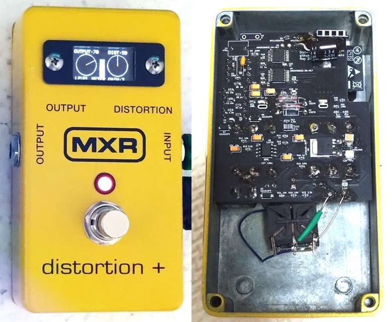
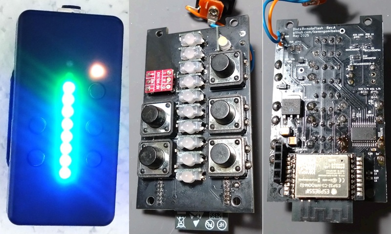
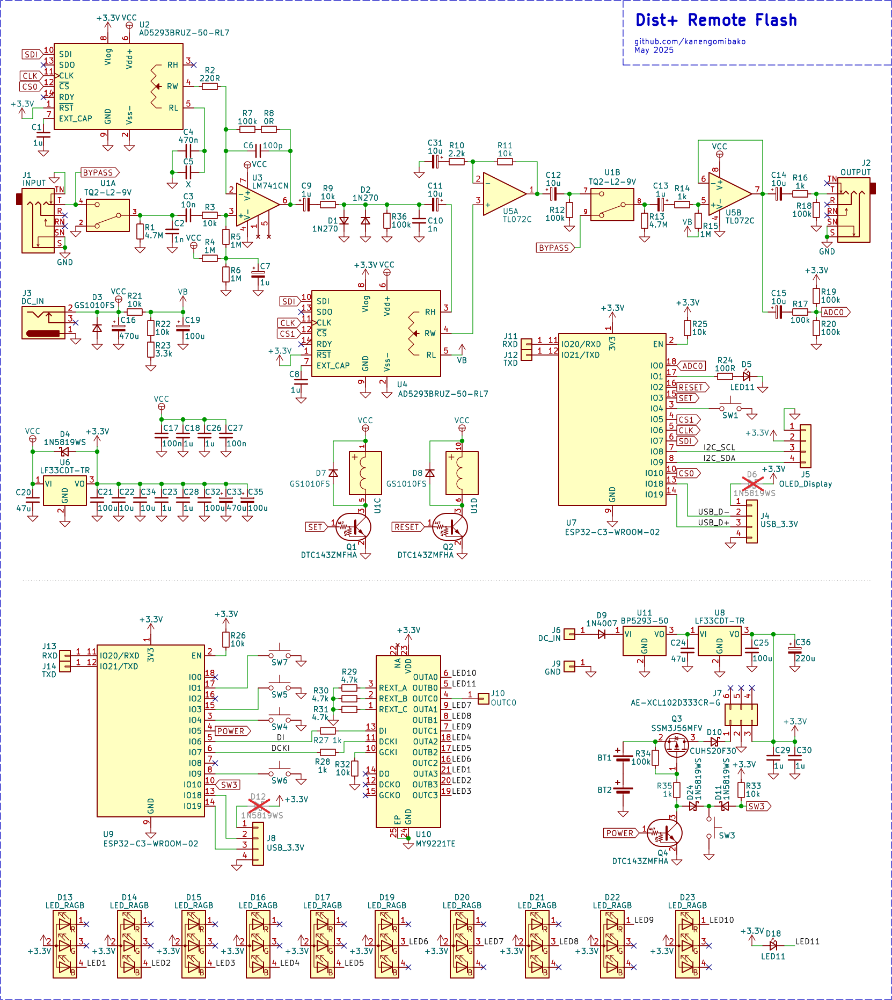
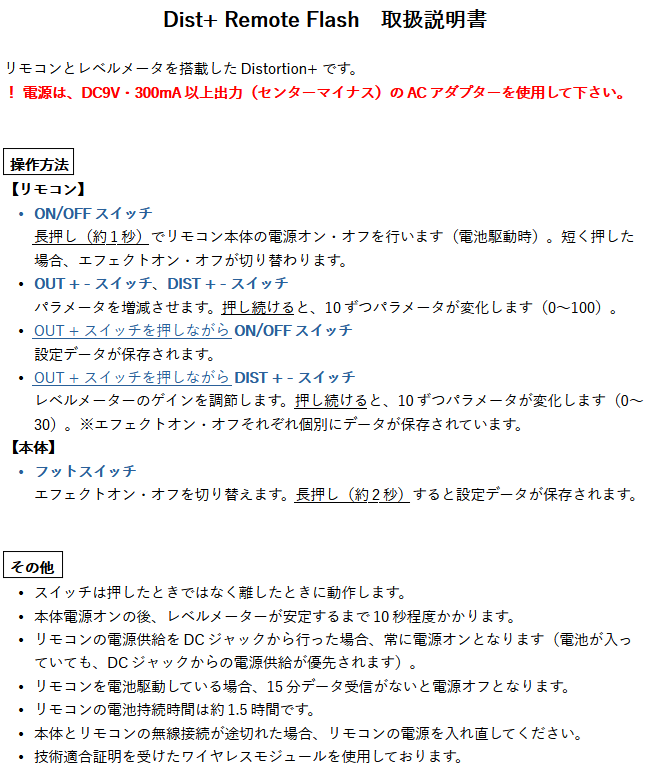

Dist+ Remote Flash
2025年12月27日 カテゴリー：修理・改造・解析

第3回改造エフェクターコンテストに向け、リモコン操作とレベルメーター表示ができるDistortion+を製作しました。 今回は無線通信というのが自分の中でのテーマで、一度やってみたいと思っていたことでした。最初は安価な赤外線リモコンを考えていましたが、見た目のインパクトをよくするためにリモコン側にレベルメーターを表示することにし、通信はBluetoothを使うことにしました。 マイコンは、無線通信で使われることが多いESP32を選びました。
改造元は、たまたま手ごろな価格で手に入ったMXR Distortion+です。 ついでに回路をトレースしています（KiCadデータはGitHubへ）。 中身はほぼ入れ替わっていて、改造と呼べるかどうかは微妙なところです。オペアンプとゲルマニウムダイオードは元々ついていたものを使用しています。
【回路図】
本体は、マイコンのADCで音量データを取得しリモコンへ送信します。そしてリモコンからのデータを受信しパラメータを変更します。 リモコンは、ボタン操作データを本体へ送信します。また、受信した音量データに合わせてレベルメーターを表示します。電源スイッチ周辺は、amPlug2を真似しました。
LCSCで手に入る適切なデジタルポテンショメーターが50kΩだったので、それに合わせて周辺部品の値を変更してあります。C6は元の回路にはありませんが、周波数特性を合わせるため追加しました。音量が小さい場合があるため、後段に増幅段も追加しました。
バイパス時もレベルメーターを表示したかったため、必然的にバッファードバイパスとなりました。しかし入力のC2（1nF）が音色に関わってくるため、リレーを使った変則的なバイパスとなっています。
開発環境
ESP32は初めて使うマイコンで、それなりに苦労しました。 ESP32-C3-WROOM-02-N4単体にESP32ダウンローダキットで書き込むのがうまくいかず、USBで書き込んでいます（→ESP32-C3-WROOM-02の開発環境を構築する）。 Arduino IDEではコンパイルに時間がかかりすぎるため、途中でVisual Studio Code + PlatformIOへ変更しました。コード生成にはAIを適宜利用しています。
後からわかったのが、電源が貧弱だと電圧降下でマイコンのリセットがかかることがあるということです。そのため、いくつか電源にコンデンサを後付けしてあります。
消費電流
本体は9Vで消費電流100mA程度ですが、リモコンは電池（3V）だと350mA程度です。マイコンでこれほど電力が必要となるのは今までなかったことでした。 緊急時のため、リモコンも9V電源で動かせるようDCジャックを設けています。
デジタルポテンショメーター
最初はPWMとアナログフォトカプラによる制御を検討しました。DropInTap PT2399で採用していたデューティ比の高精度制御を試しましたが、抵抗値が安定しませんでした。 結局1024タップ、リニアテーパーのデジタルポテンショメーターを用い、DISTORTIONポットは疑似的なCカーブで動かしています。
ADC
ESP32のADCは多少クセがあることが報告されています。今回は無音時のADC値が4096の半分にならない状態（実測2285程度）だったため、実測値に合わせてゼロ補正しています。
Bluetooth Low Energy（BLE）
BLEは定期的通信を行っているらしく、ノイズが25msごとに乗っていました。これについては電波強度を弱くし問題ないレベルになりました。 シールドケースなので通信がうまくいくか心配でしたが、問題ないようです。レイテンシーは測定していませんが、明らかにメーターの反応は遅い印象です。 市販のワイヤレスシステムは低レイテンシー、低消費電力ということで、独自の通信方式だと思われます。
LEDドライバ MY9221TE
MY9221TEが採用されているGrove LED Barモジュールのライブラリを一部変更して利用しました。
【取扱説明書】
コンテスト応募時に同封した説明書です。
第３回改造エフェクターコンテスト第１次審査突破作品紹介動画の9番目（26:33）で本機が紹介されています。残念ながら入賞はなりませんでした。